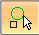

Create a 2D circular pattern of sketches
This procedure is for ordered modeling.
-
Create a new sketch by choosing the Home tab→Sketch group→Sketch command, and then selecting a sketch plane. To use an existing sketch, select the sketch in PathFinder and click Edit Profile.
-
Choose the Home tab→Features group→Circular Pattern
 command.
command. -
Select sketch elements to pattern, and then right-click to accept.
You can add or remove geometry by editing the pattern. Go to pattern edit and click on the Select Step

. Select the sketch elements to add or press Shift+click to delete elements from the existing pattern. -
Use the options on the Circular 2D Pattern command bar (ordered sketch) to define characteristics of the pattern.
-
Click for the center point of the circular pattern.
-
Click to specify the radius (start point) of the pattern circle.
-
Click to specify the direction for placing the pattern along the circle.
-
Click Close Sketch.
Deleting pattern occurrences
-
When deleting the pattern definition, all the pattern occurrences are deleted and only the master geometry remains.
-
When deleting the master, all occurrences are deleted and the pattern definition remains as is.
-
When deleting an occurrence of a pattern, that occurrence suppresses.
How do I
Construct an ordered rectangular pattern featureCreate a 2D rectangular pattern of sketches
Construct an ordered circular pattern feature
Construct a Fast Pattern
Construct a Smart Pattern
Define the pattern plane
Learn more
Pattern featuresRectangular Pattern (ordered)
Circular patterns
Look up more details
Pattern command (ordered)Rectangular Pattern command bar (ordered sketch)
Circular Pattern command bar (ordered sketch)
Pattern command bar